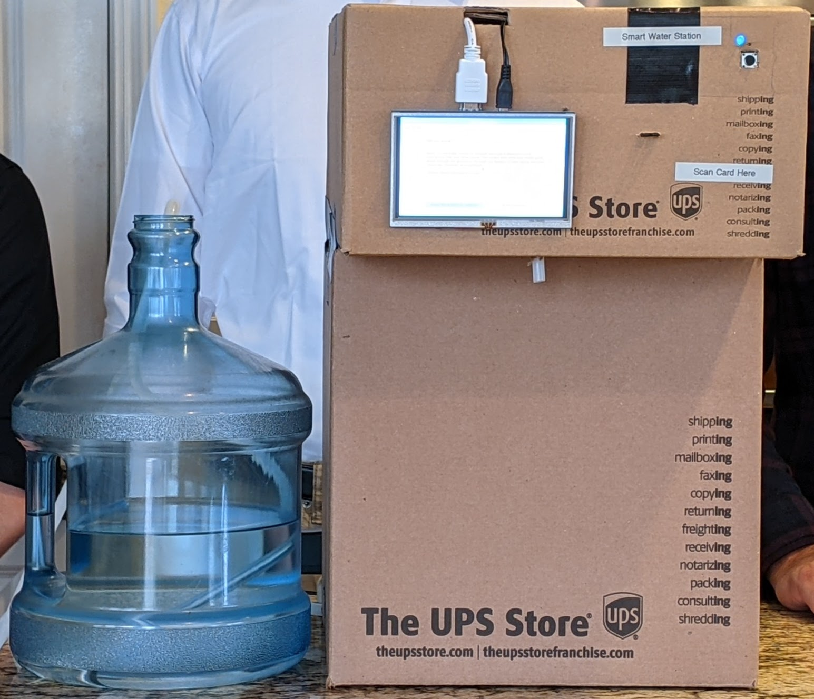

Project Details
Smart Water Station
The inspiration of this project came from wanting to solve the problem of dehydration. After doing research on human water intake needs compared to survey averages, we realized that lots of people do not drink a sufficent amount of water each day. Thus the Smart Water Station was born. As a team, we developed three main systems: GUI, RFID, and Pump. The GUI is the brain of the project, where important health data can be shown to the user in an intuitive manner. The RFID is responsible for maintaining privacy to the user by only allowing access to data if the user has signed in physically. The Pump is the heart of the project, where it is controlled by the user to dispense water from the water reservoir.
Links
GitHub LinkYouTube Video Demo